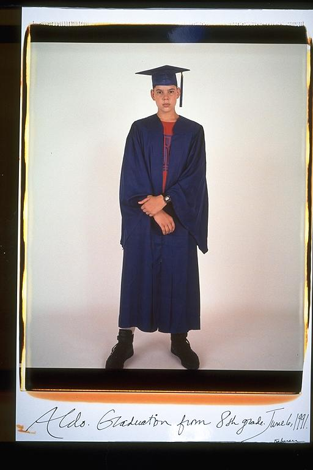

Aldo: Graduation from eighth grade was a big step for me. Only because I, like all of my other friends, had been hearing about high school since a young age. In high school you can do this, and in high school people do that. So, finally getting there was great. Although it was another reminder that you spend years getting to the highest grade, only to start all over at the bottom.
